Intelligent Systems⇦
Not widely sourced
Content heavily lifted from Matthew Barnes (Southampton Uni CompSci student)!
All knowledge presented here is sourced from his public notes.
University course
These notes were made for the University of Southampton COMP2208 module.
Classical AI⇦
Blind Search
Blind Search⇦
An uninformed search generally used when knowledge is restricted.
Problem Types⇦
Single-state problem
- Deterministic
- Observable
- State is always known
The shortest path problem is an example of this.
Sensorless / multi-state problem
- Deterministic
- Non-Observable
- Initial state could be anything
Guessing a random number. The random number could be anything but it will always be found.
Contingency problem
- Non-Deterministic
- Partially observable
You have to perform an action and observe the reactions to move towards a solution.
Exploration problem
- Unknown state space
- Don't even know what effect actions have
- "explore" the environment to solve
Robot exploration as the robot has no idea where it is, it just reacts to the environment.
Single-state Problem Formulation⇦
| Step | Description | Example |
|---|---|---|
| Initial state | The state we start in | When you start a chess game |
| Action or successor function | The transition from one state to another | When you move a piece in a chess game |
| Goal test | Checks if solution has been found | Checkmate is reached |
| Path cost | The cost of getting to the solution | Moves taken |
There are multiple path costs that a chess algorithm can adopt.
One could be ‘number of opponent pieces’. This would make the algorithm aggressive, since it would try to reduce the number of opponent pieces as much as it can.
Another could be ‘number of moves taken’. This would make the algorithm more strategic, achieving a checkmate in the least amount of moves.
States vs Nodes⇦
- A state is not a node
- A state is a representation of a physical configuration
- A node is a data structure consituting part of a search tree used to find the solution
- A state is a property of a node
Search Strategies⇦
Strategies are evaluated with the following factors
- Completeness does it always find a solution if it exists?
- Time Complexity how does time taken grow as the solution depth increases
- Space complexity how does the number of nodes in memory grow
- Optimality does it always find a least-cost solution?
Time and space complexity are measured in terms of
- b how many children each node reaches (maximum branching factor)
- d depth of least-cost optimal solution
- m maximum depth of the state space (may be infinite)
Searching using Tree Search⇦
- To find the solution to a problem you need to find the path from the initial state to a goal state
- This is most commonly achieved using a type of tree search
- There are four kinds of tree search algorithms used for this
| Tree search | Complexity | Description |
|---|---|---|
| Breadth-first search | Complete yes if branching factor is finite Time O(bd+1) Space O(bd+1) Optimal Yes if step cost is constant |
In breadth-first search, all of the nodes at the current depth level are searched before moving onto the next depth level. This is complete (assuming the branching factor isn’t infinite), even with infinite depth or loops. Only problem is, the space complexity is terrible. However, breadth-first search is optimal (finds the least-cost solution) if the step cost is constant. This is true because it finds the shallowest goal node. |
| Depth-first search | Complete No, if depth is infinite (or has loops) it'll go on infinitely Time O(bm) Space O(bm) Optimal No, because deeper solution may be found first |
In depth-first search, it starts at the root and goes all the way down to the far-left leaf, then backtracks and expands shallower nodes. The space complexity is great (it’s linear) because branches can be released from memory if no solution was found in them. However, it is not complete |
| Depth-limited search | Complete No, because the solution may be deeper than the limit Time O(bn) Space O(bn) Optimal No, because deeper solution might be found first |
It’s the same as depth-first search, but there’s a depth limit (n), and anything below that depth limit doesn’t exist |
| Iterative deepening search | Complete Yes Time O(bd) Space O(bd) Optimal Yes, if step cost is constant |
This is an applied version of depth-limited search, where we start from depth limit 0 and increment the depth limit until we find our goal. We do this to combine depth-first search’s space efficiency with breadth-first search’s completeness. Although we get those benefits, IDS is a little bit slower than depth-first. |
Repeated States⇦
- When searching we may come across an already visited state
- In a deterministic system this will always move to the same next state
- Because of this we can recognise already visited states and prevent further exploration
- This converts our tree searches into graph searches (as we are no longer searching a tree)
Bidirectional Search⇦
- A bidirectional search does two searches
- One starts at the initial state and the other from the goal state
- This is quicker as bd/2 + bd/2 is much less than bd
- At each iteration, the node is checked if it has been discovered by both searches
- If it has a solution has been found
- This is only efficient if the predecessor of a node can be easily computed
Heuristic Search
Heuristic Search⇦
History and Philosophy
History and Philosophy⇦
Local Search
Local Search⇦
Constraint satisfaction problems
Constraint satisfaction problems⇦
- In a standard search problem the state is viewed as a black box
- A state can be any data structure that supports
- A successor function
- An objective function (fitness)
- A goal test
- In constraint satisfaction problem we will define the data structure of the state
- In particular, a state is defined by variables x_{i} with values from the domain D_{i}
- In the goal test we use a set of constraints
Graph colouring problem
We try to colour regions with three different colours such that adjacent regions have a different colour.

For this map the problem is defined as follows
- Variables are the regions WA, NT, Q, NSW, V, SA, T
- Domains are the three colours D_{i} = \{red, green, blue\}
For example WA and NT cannot have the same colour
- Complete Every variable is assigned a value
- Consistent No constraint violated
This is an example solution for this problem

- Every region has a colour with no two adjacent regions sharing a colour
- This solution is therefore complete and consistent
- This can be generalised as a constraint graph
- The nodes are the variables and the edges are the constraint
- No two connected nodes can have the same assignment
- In addition, the resulting graph is a binary CSP because each constraint relates two variables (each edge connects two nodes)
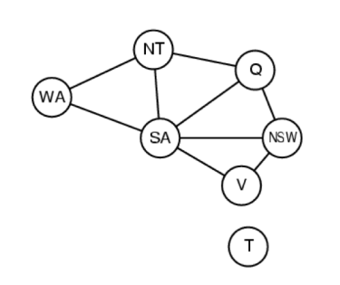
CSPs come in different variants⇦
If the CSP has discrete variables
And the domain is finite
- We have n variables and the domain size is d
- Therefore there exists O(d^{n}) complete assignments
- Examples are boolean CSPs, including boolean satisfiability (SAT) which is NP-Complete
And the domain is infinite
- Examples of infinite domains are integers and strings
- An example for such a CSP is job scheduling where the variables are the start/end days for each job
- The constraints could be defined like StartJob_{1} + 5 < StartJob_{3}
If the CSP has continuous variables
- An example is start/end times of the Hubble Space Telescope observations
- The constraints are linear constraints solvable in polynomial time by linear programming
Constraints come in different variants too⇦
- Unary constraints involve a single variable, for example SA \neq green
- Binary constaints involve pairs of variables, for example SA \neq WA
- Higher-order constraints involve 3 or more variables, for example X_{1} + X_{2} = X_{3}
Some more real-world CSPs are
- Assignment problems, e.g who teaches what class
- Timetabling problems, e.g which class is offered when and where
- Transportation scheduling
- Factory scheduling
Note how many real-world problems involve real-valued (continuous) variables!
Missing developing an algorithm for CSPs
Adversarial Games: Minimax
Adversarial Games: Minimax⇦
Alpha-beta Pruning
Alpha-beta Pruning⇦
- Alpha-beta pruning goes even beyond minimax
- We have strong and weak methods to improve minimax
- Strong methods take into account the game itself, ie board symmetry in tic tac toe
- Weak methods can apply to any game, one of which is alpha-beta pruning
What is pruning?
- A good example of pruning is the symmetry in tic tac toe
- A part of the full game tree looks like this
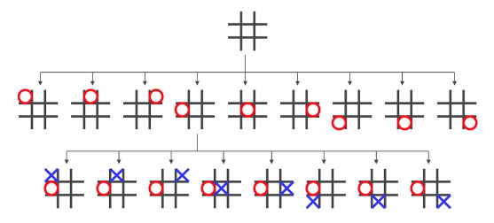
- Some of these states are redudant, we can achieve them just by rotating the board
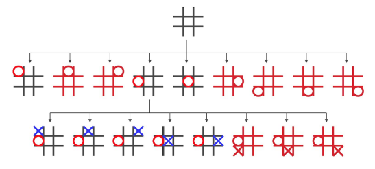
- By removing the redundant states we can prune the search tree a lot
- Not every game can be pruned in this way!
How does alpha-beta pruning work?
Minimax explores the entire tree to a given ply depth
- It evaluates the leaves
- It propagates the values of these leaves back up the tree
Alpha-beta pruning performs DFS but allows us to prune/disregard certain branches of the tree
- Alpha represents the lower bound on the node value. It is the worst we can do. It is associated with MAX nodes and since it is the worst it never decreases.
- Beta represents the upper bound on the node value. It is the best we can do. It is associated with MIN nodes and since it is the best it never increases.
If the best we can do on the current branch is less than or equal to the worst we can do elsewhere, there is no point continuing this branch!
This is very similar to minimax except we can return early if the alpha/beta values indicate to do so
Alpha-beta is guarenteed to give the same values as minimax except we reduce the search space.
- If the tree is ordered, the time complexity is O(bd/2) (minimax is O(bd)!)
- Perfect ordering is not possible as we wouldn't need alpha-beta in the first place!
Planning
Planning⇦
A plan is a sequence of actions to perform tasks and achieve objectives
- This means generating and searching over possible plans
The classical planning environment is fully oberservable, deterministic, finite, static and discrete. It helps to assist humans in practical applications such as
- Design and manufacuring
- Military operations
- Games
- Space exploration
In the real world we have a huge planning environment. We need need to reduce this environment by using heuristics and decomposing the problem.
What is a planning language?
In order to define plans we need a planning language
A good planning language should
- Be expressive enough to describe a wide variety of problems
- Be restrictive enough to allow efficient algorithms to operate on it
- Be able to take advantage of the logical structure of the problem
Examples of planning languages are
- The STRIPS (Stanford Research Institute Problem Solver) model
- ADL (Action Description Language)
Typically planning languages involve
- States decompose the world into logical conditions and represent a state as a collection of these conditions, for example
OnTable(Box1) ⋀ OnFloor(Box2) - Goals a goal is a partially specified state, if any state contains all the literals (conditions) of the goal then this state is considered a goal state
- Actions a precondition and an effect, we can only perform the effect if the precondition is already met, for example we can only put a box on a table if it isn't already on the table
In an action there needs to exist a substitution for all variables in the precondition!
Air cargo transport
| Part | Definition |
|---|---|
| Initial State | Init( At(C1, SFO) ⋀ At(C2, JFK) ⋀ At(P1, SFO) ⋀ At(P2, JFK) ⋀ Cargo(C1) ⋀ Cargo(C2) ⋀ Plane(P1) ⋀ Plane(P2) ⋀ Airport(JFK) ⋀ Airport(SFO) ) |
| Goal State | Goal( At(C1, JFK) ⋀ At(C2, SFO) ) |
| Actions | Action( Load(c, p, a)PRECOND : At(c, a) ⋀ At(p, a) ⋀ Cargo(c) ⋀ Plane(p) ⋀ Airport(a)EFFECT : ¬At(c, a) ⋀ In(c, p) ) |
| Example plan | [Load(C1, P1, SFO), Fly(P1, SFO, JFK),Load(C2, P2, JFK), Fly(P2, JFK, SFO)] |
Spare tire problem
| Part | Definition |
|---|---|
| Initial State | Init(At(Flat, Axle) ⋀ At(Spare, trunk)) |
| Goal State | Goal(At(Spare, Axle)) |
| Actions | Action( Remove(Spare, Trunk)PRECOND : At(Spare, Trunk)EFFECT : ¬At(Spare, Trunk) ⋀ At(Spare, Ground) ) |
Action( Remove(Flat, Axle)PRECOND : At(Flat, Axle)EFFECT : ¬At(Flat, Axle) ⋀ At(Flat, Ground) ) |
|
Action(PutOn(Spare, Axle)PRECOND : At(Spare, Ground) ⋀ ¬At(Flat, Axle)`EFFECT : At(Spare, Axle) ⋀ ¬At(Spare, Ground) ) |
|
Action( LeaveOvernightEFFECT : ¬At(Spare, Ground) ⋀ ¬At(Spare, Axle) ⋀ ¬At(Spare, trunk) ⋀ ¬At(Flat, Ground) ⋀ ¬At(Flat, Axle) ) |
|
| Example plan | [Remove(Flat, Axle),Remove(Spare, Trunk),PutOn(Spare, Axle)] |
There are two main approaches to making an algorithm which can come up with a plan
- Forward search, progression planners do forward state-space search. They consider the effect of all possible actions in a given state and search from the initial state to the goal state.
- Backward search, regression planners do backward state-space search. They consider what must have been true in the previous state to a goal state and therefore search from the goal state to the initial state.
Forward searches are nothing more than any complete graph search algorithm, for example A*.
Backward searches find actions which have effects that are currently satisfied and pre-conditions which are preferred. These actions must not undo desired literals. This prevents unnecessary actions being considered and therefore reduces the branching factor.
Both progression and regression perform poorly without a good heurisic
To find an admissile heuristic there are generally two approaches
- Use the optimal solution to the relaxed problem, e.g. where we remove all preconditions from actions
- Use the sub-goal independence assumption: The cost of solving a conjunction of subgoals is approximated by the sum of the costs of solving the sub-problems independently.
Partial-order Planning⇦
Progression and regression planning are forms of totally ordered plan searches
- We can improve this by specifying some actions which can be done in parallel
- For these actions it doesn't matter which comes first
Each plan has 4 components
- A set of actions (steps of the plan)
- A set of ordering constraints A < B (A has to come before B)
- A set of causal links A\xrightarrow{p}B or A\xrightarrow{} p\xrightarrow{} B (A achieves p for B)
- A set of open preconditions
Shoe example
| Part | Definition |
|---|---|
| Initial State | Init( ) |
| Goal State | Goal( RightShoeOn ⋀ LeftShoeOn ) |
| Actions | Action( RightShoePRECOND : RightSockOnEFFECT : RightShoeOn ) |
Action( RightSockPRECOND :EFFECT : RightSockOn ) |
|
Action( LeftShoePRECOND : LeftSockOnEFFECT : LeftShoeOn ) |
|
Action( LeftSockPRECOND :EFFECT : LeftSockOn ) |
Actions = {Rightsock\\ Rightshoe\\ Leftsock\\ Leftshoe\\ Start\\ Finish}
Orderings = {Rightsock < Rightshoe \\ Leftsock < Leftshoe}
Links = {Rightsock \xrightarrow{Rightsockon} Rightshoe \\ Leftsock \xrightarrow{Leftsockon} Leftshoe \\ Rightshoe \xrightarrow{Rightshoeon} Finish \\ Leftshoe \xrightarrow{Leftshowon} Finish}
We can put either shoe on first it doesn't matter. This lets us create a partially-ordered plan
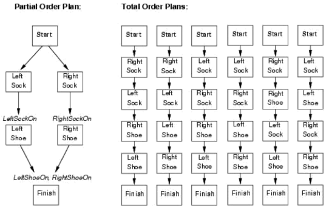
When is a plan final?
A consistent plan with no open preconditions is a solution. A plan is consistent if and only if there are no cycles in the ordering constraints and no conflicts with the links.
A POP is executed by repeatedly choosing any of the possible next actions.
Missing resolving POP
Biologically/Statistically Inspired AI⇦
Classification
Classification⇦
Reasoning
Reasoning⇦
Reasoning deals with updating our "belief model"
There are different approaches to reasoning
- Logic/Rule based we build up basic rules (axioms) using logic which we can derive other rules from
- Stochastic reasoning reasoning based on probabilities
Total Probability
The total probabilty of an event B is defined as
The total probability for event B is the sum of the probabilities for event B and all cases of event A
Conditional Probability
The conditional probability of an event B is defined as
P(A|B) means "the probability of event A given that B is true"
Why is it defined like this?
Let's look at an example to explain this. We have a bag with red and blue marbles, and we want to know the probabilities of drawing a red/blue marble. We can visualise the probabilities for 2 consecutive draws like this
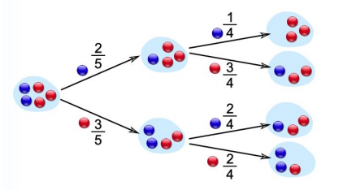
What is the probability of drawing a blue marble, and then another blue one? It's a chance of \frac{2}{5} followed by a chance of \frac{1}{4} so overall it's \frac{1}{10}
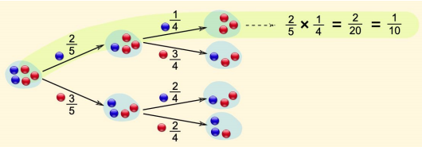
Now define event A to be "draw a blue marble first" and define event B to be "draw a blue marble second"
We have just calculated P(A\, and\, B) = P(A) * P(B|A)
Bayes' Rule
Bayes' rule is defined as
We can derive this rule with the forumlas in conditional probability. Informally this gives us the probability for B given that A is true. We can think of Bayes' rule as
We can caclulate the probability of our hypothesis based on some evidence which are events we have observed already
Monty hall problem
There are three doors, two hides goats the other hides a car
- We choose door 1
- The host opens door 2 and there is a goat
- We can now stay with door 1 or swap to door 3
- P(win) if we stay with door 1 is \frac{1}{3} as we made our choice when there were 3 doors
- What if we swap to door 3?
- P(B) = \sum_{a} P(B|A = a)P(A=a) (see total probability)
- Let B = win and A = car behind door 1 (lose)
- P(win) = P(win | door1) * P(door1) + P(win | ¬door1) * P(¬door1)
- P(win | door1) = 0 we switched to door 3!
- P(door1) = \frac{1}{3} 1 car 2 goats so 1 in 3
- P(win | ¬door1) = 1 if not behind door1 it must be behind door3
- P(¬door1) = \frac{2}{3} as door2 has been opened by the host
- P(win) = 0 * \frac{1}{3} + 1 * \frac{2}{3} = \frac{2}{3}
Independence
Two random variables are independent if their joint probability is the product of their probabilities
Therefore the conditional probabilities of A and B are equal to the probability of the event itself!
Bayesian Belief Update⇦
In bayesian reasoning we always keep a belief model when we make our decisions
- We use probabilities to capture uncertainty in our knowledge
- We also need to update our belief model after we have seen some more evidence
How do we update our belief after each observation?
We know all the probabilities on the right side
- P(model) is called the prior. It is the probability that the model is true without taking any observation into account.
- P(observation|model) is called the likelihood. It is the probability that the observed event occurs given that the model is true.
- P(observation) is the probabilty that the observation occurs in general.
We want to calculate the left hand side
- P(model|observation) is call the posterior. It is the probability that the model is true given that we have seen the observation.
Complex Knowledge Representation⇦
So far we only considered a simple correlation between probabilities but what if we have a much more complicated network of correlations? How can we apply inference in complex networks (ie how can we apply Baye's rule) there?
Joint Distribution
The simplest way to do inference is to look at the joint distribution of the probability values
Here is an example from an employment survey
| Male | Long hours | Rich | Probability |
|---|---|---|---|
| T | T | T | 0.13 |
| T | T | F | 0.11 |
| T | F | T | 0.10 |
| T | F | F | 0.34 |
| F | T | T | 0.01 |
| F | T | F | 0.04 |
| F | F | T | 0.02 |
| F | F | F | 0.25 |
Now we can ask questions like "What is the probability that the person is rich?"
- We need to calculate the total probability of P(Rich)
- As we have the table we can sum up all probabilities where Rich = True
- P(Rich) = 0.13 + 0.10 + 0.01 + 0.02 = 0.26
What about the probability a person works for long hours given that he is a male?
- We need to calculate P(Longhours | Male)
- This is equal to \frac{P(Longhours\, and\, Male)}{P(Male)}
- P(Longhours\, and\, Male) = 0.13 + 0.11 = 0.24
- P(Male) = 0.13 + 0.11 + 0.10 + 0.34 = 0.68
- P(Longhours | Male) = 0.24 / 0.68 = 0.35
We can do any inference from joint distribution however this does not scale well in practice. For example if we had 30 variables we would need a table with 230 entries!
This also does not account for independant variables which we can discard completely!
Bayesian Networks
We can graphically represent the network like this
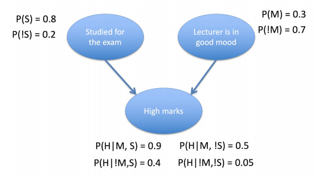
- S = studied for the exam
- M = lecturer is in a good mood
- H = high marks
- Every circle (node) is a random variable
- Every directed edge from node A to B means B depends on A
- Therefore H depends on both S and M
- There is no directed edge between S and M, they are independent
What is we wanted to calculate "Given high marks, what is the probability that the lecturer was in a good mood?"
- This is P(M|H) = \,?
- We will use Bayes' rule P(M|H) = \frac{P(M)P(H|M)}{P(H)}
- We know that P(M) = 0.3 but we don't know P(H) or P(H|M) yet
- P(H|M)\, = P(H | M\, and\, S) * P(S) + P(H | M\, and\, ¬S) * P(¬S)\\\qquad\qquad = 0.9 * 0.8 + 0.5 * 0.2\\\qquad\qquad = 0.82
- P(H) = P(H| M\, and\, S) * P(M\, and\, S)\\\qquad\qquad + P(H | M\, and\, ¬S) * P(M\, and\, ¬S)\\\qquad\qquad + P(H | ¬M\, and\, S) * P(¬M\, and\, S)\\\qquad\qquad + P(H | ¬M\, and\, ¬S) * P(¬M\, and\, ¬S)
- As we know M and Sare independant we know their joint probability is just their product
- P(H) = 0.9 * 0.3 * 0.8 \\\qquad\qquad + 0.5 * 0.3 * 0.2 \\\qquad\qquad + 0.4 * 0.7 * 0.8 \\\qquad\qquad + 0.05 * 0.7 * 0.2 \\\quad\quad\;\; = 0.216 + 0.03 + 0.224 + 0.007 \\\quad\quad\;\; = 0.477
- Now we can finally calculate P(M|H)!
- P(M|H) = \frac{P(M)P(H|M)}{P(H)} = \frac{0.3 * 0.82}{0.477} = 0.516
- The probability the lecturer was in a good mood, given high marks, is about 52%
Properties of Bayesian Networks
- Must be directed acyclic graphs
- Major efficieny is that we have economized on memory
- Easier for humans to interpret
Why is it good to use Bayesian Networks?
- It captures uncertainty of our knowledge about the environ in a very elegant and simple way
- We can integrate our prior knowledge into the reasoning by using the prior distribution (which represents our prior knowledge)
- We can always update our belief about the world by using Baye's Theorem
Why is it bad to use Bayesian Networks?
- If we use a wrong prior then it will be difficult to get correct answers
- The calculation includes integrals and summing over all possible situations (which is typically computationally very expensive!)
Descision Making
Descision Making⇦
So far we have looked at classification and updating our belief model. Now we will look into actual decision making and updating our decision making policy. We will do this by using 2 simple models.
Multi-armed bandits (bandit theory)
Bandit Theory⇦
Suppose we want to outsouce a robbery. There are three different guys from which we can choose one, but we don't know how effective they are. The expected reward per robbery is 50 for the first guy, -10 for the second guy and 30 for the third guy. But remember we don't know that. The expected reward is an average value, meaning that they won't always achieve exactly this value. Therefore our goal is to find out that the first guy is most effective via repeated robbing in multiple rounds. Each round we choose exactly one guy.
Who should we hire each round?
It is called exploration when we just try out different guys and record their performance
| guy 1 | guy 2 | guy 3 |
|---|---|---|
| 50 | -10 | 30 |
| 27 | -3 | 41 |
| 69 | 4 | 22 |
| 55 | -17 | 31 |
| ... | ... | ... |
| 72 | -6 | 33 |
| ----- | average | ------ |
| 51.3 | -8.6 | 29.5 |
We will eventually get to their expected values earlier however there is a limit to the number of rounds! We also want to find the best guy as soon as possible so that we can maximise our total reward!
It is called exploitation when we always choose the one which we think is best. There is a trade-off between exploration and exploitation.
If we focus too much on exploration
- We can accurately estimate each guy's expected performance
- But it will take too much time, and we'll end up with a low total reward
If we focus too much on exploitation
- We can focus on maximising the total reward
- But we might miss a bandit with a higher reward
Multi-armed Bandit (MAB) Model⇦
The key challenge is to efficiently balance exploration and exploitation such that we maximise the total reward.
There are multiple arms with different distributions (probabilities that we win). We don't know the distribution of the arms. Here is an example model with three arms.
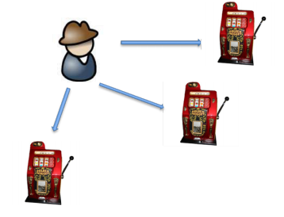
We are going to "play" with the arms for multiple rounds, where we can select one in each round. Our objective is to maximise the total reward. How explorative or exploitative should we be? The Multi-armed Bandit Model is the simplest model that captures the dilemma of exploration vs exploitation. How can we solve the MAB problem?
- We dont have knowledge about the expected reward values
- What is the optimal total value?
- Can we achieve the optimal total value?
Our goal is to design algorithms that are close to the optimum as much as possible (good approximation). There are two different approaches to solving this.
Epsilon-first approach
- Suppose the number of rounds T is fixed
- Choose an epsilon value 0 < epsilon < 1 (typically between 0.05 and 0.2)
- In the first epsilon*T rounds we only do exploration by pulling the arms in a round robin manner
- After that we do exploitation by choosing the arm with the highest average reward value
Suppose epsilon is 0.1 and T is 100
- In the first 10 rounds (0.1 * 100) we pull all three arms in a round robin manner
- After the first 10 rounds we calculate the arm with the highest average reward
- In the last 90 rounds (0.9*100) we pull this arm only
Epsilon-greedy appraoch
- Choose an epsilon value 0 < epsilon < 1 (typically between 0.05 and 0.2)
- Pull the arm with the current best average reward value with probability 1-epsilon
- Pull one of the other arms uniformly at random
- Repeat this for each round
Suppose epsilon is 0.1
- We pull the arm with the current best average reward 90% of the time
- We pull a random arm 10% of the time
| Epsilon-first | Epsilon-greedy |
|---|---|
| ✔️Typically very good when T is small | ✔️Typically efficient when T is sufficiently large |
| ❗Needs to know T in advance | ❗Slow convergance at start |
| ❗Sensitive to epsilon value | ❗Sensitive to epsilon value |
Other Algorithms⇦
There are also other algorithms, not just epsilon-first and epsilon-greedy. One example is Upper Confidence Bound (UCB) which combines explorations and exploitation within each single round in a very clever way.
Another example is Thompson-sampling which involves maintaining a belief distribution about the true expect reward of each arm using Bayes' Theorem. Randomly sample from each of these believes then choose the arm with the highest sample. We repeat this each round.
Performance of Bandit Algorithms and Regret
- How can we compare the different algorithms?
- How can we measure the goodness of an algorithm in general?
- Can we always achieve the optimal solution (best possible)?
- Spoilers We cannot achieve the best possible!
Our aim is to design algorithms that have close performance to that of the best possible. One measurement to quantify the performance is called regret. Regret is the difference between the performance of an algorithm with that of the best possible for a certain number of steps taken.
Let's go back to the robbery example
- We have 3 arms and we pull 100 times
- Arm 1, 2 and 3 have the expected rewards 50, -10 and 30
- Remember we aren't supposed to know that!
- The best possible algorithm would choose arm 1 all 100 times, therefore the total reward would be 5000
- Suppose our algorithm chooses arm 2 20 times and arm 3 10 times and for the rest it pulls arm 1. The total reward is -10*20 + 30*10 + 50*70 = 3600
- The difference (ie regret) is 5000 - 3600 = 1400
- We can then say the regret for this algorithm in 100 time steps is 1400
Does there exist a no-regret algorithm? Hold-on! A no-regret algorithm is an algorithm where its average regret converages to 0 when the number of time steps approaches infinity. This indicates that, on average, the algorithm always pulls the best arm. This also indicates that, on average, a no-regret algorithm will start to behave like the optimal (best) algorithm. That's exactly what we want!
Extensions of the Multi-armed Bandit
There are some extensions to the multi-armed bandit model.
- budget-limited bandit we have to pay a cost to pull an arm with a total budget limit
- dueling bandits we choose 2 bandits at each round and we only check which one is better but not the actual reward values
- best-arm bandit we aim to identify the best arm, we do this by pure learning (only exploration no exploitation)
Markov decision process (reinforcement learning)
Reinforcement Learning⇦
How do humans learn? They learn from experiences.
Let's start with an example problem, an agent wants to find the way out from a maze.
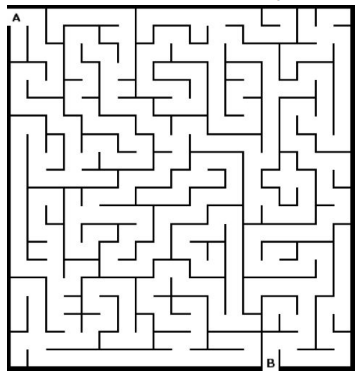
At each time step the agent
- Chooses a direction
- Makes a step
- Checks whether it's the exit
This is a standard search problem! Let's set a new goal for our problem. The agent wants to find the shortest path from A (entrance) to B (exit). What we want to have is a policy of behaviour, at each situation it will tell the agent what to do.
Feedback
- In reinforcement learning, the agent receives feedback on how good the chosen action was
- There is continuous feedback until the goal is reached
- It is inbetween supervised and unsupervised learning
- The agent repeatedly interacts with the environment
- It gets some feedback, positive or negative, hence reinforcement
- It is a learning problem because we try to find a good policy based on the feedback
- A policy is a set of rules that tells the agent what to do at each state
- How do we know what actions lead us to victory (our goal)?
- What about those that made us lose the game?
- How can we measure which action is the best to take at each time step?
- We need to be able to evaluate the actions we take and the states we are in
States, Actions and Rewards⇦
Let's define states, actions and rewards
- We can think about the world as a set of states, there are good and bad states (less or more ideal)
- With an action we move from one state to another
- The reward is the feedback of the environment, it measures how good an action was
We want to maximise the sum of collected rewards over time.
Temporal Difference Learning
Suppose we try to find the shortest path for some maze.
- There are six states where one is the terminal state (exit state).
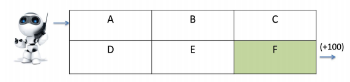
- We will start at state A and try to reach state F, which gives a reward of 100
- All other states, initially, have a reward of 0
- We want to maximise the rewards over time, which is equivalent to finding the shortest path
- At the beginning we don't have any prior knowledge so we have to start with a really simple policy, just randomly move at each state!
- Later when they have reward values we will always move to the state with the highest value
- Sometime later we eventually arrive at F where we receive a reward of 100
- What was the last state before F? Surely that state must be pretty good too
- We then update the value of that state to be good
- If we repeat this process we are performing temporal difference learning
- We maintain the value V of each state, they represent how good a state is
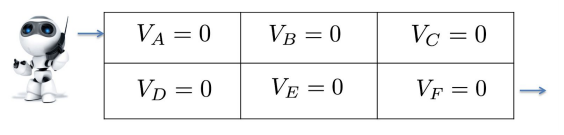
How are we going to update our esitmate of each state's value?
- Immediate reward is important, if moving into a certain state gives us a reward or punishment we need to record that straight away!
- But future reward is important too. A state may give us nothing now but we still like it if it is linked to future reinforcement
- It is also important not to let any single learning experience change our opinion too much
- We want to change our V estimates gradually to allow the long-run picture to emerge
- We need a learning rate
The formula for temporal difference learning combines these factors
- Current reward
- Future reward
- Learning rate
Suppose we go from state i to state j then we will update the value of state i
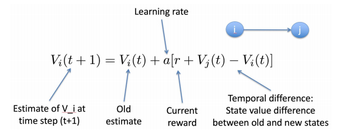
What is the learning rate?
- It determines to what extent newly acquired information overrides old information
- If we choose a=0 then the agent learns nothing
- If we choose a=1 then the agen only considers the most recent information
- Ideally we choose some value between 0 and 1
But wait, there is no negative feedback! Eventually all states will reach a max good value! We need some way to distinguish paths that require less moves. To do this we use a discount factor with a value between 0 and 1.
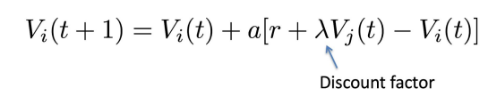
Q-Learning
In some cases we also need to learn the outcomes of the actions.
This is the case if we don't know which actions will take us to which state. In other words we want to learn the quality of taking each action at each state. This is called the Q value for a specific action and a specific state.
The Q value for state i and action k which leads to state j* with actions x** is calculated by
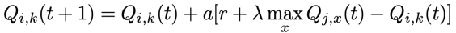
Markov Decision Processes (MDP) and Markov Chain⇦
In real world problems the state transitions are often stochastic (random)
Here is an example
- You as a student want to graduate within 4 years
- Obviously there are actions you can take to achieve this goal
- However there will be some random chance which plays some role too
- We can model the probabilities of taking a certain action in a Markov chain
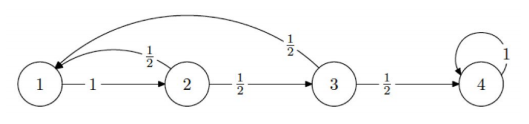
- Suppose the current state is state 3
- If we take the action there is a 50% probability that we go to state 1, and a 50% probability we go to state 4
- If the probability of arriving at the next state only depends on the current state and action (not any previous states) then the process has a Markov property
- We can also model the probabilities in an n by n matrix P with P_{ij} being the probability of making a transition from state i to state j
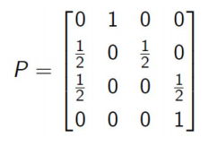
- After we have define the matrix we can also calculate the probability of being in each state after k steps
- In our example we take state 1 as start state and model this vector b = (1, 0, 0, 0)
- Now to caculate the probabilities of being in each state after k steps we will simply calculate b^{t}P^{k}
- We will get a new column vector with the respective probabilities in each state
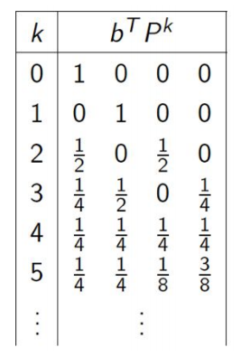
We can also apply temporal difference and Q-Learning to MDP but we need to add the probability for the state transition
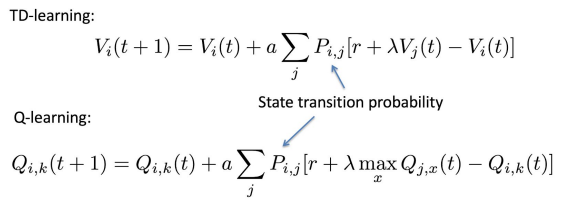